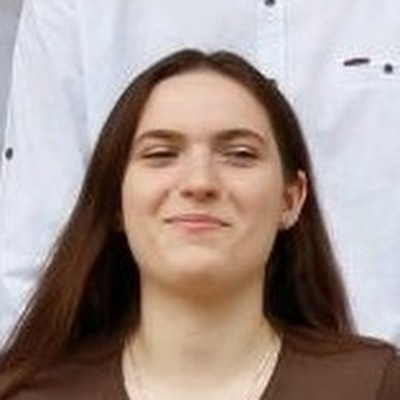
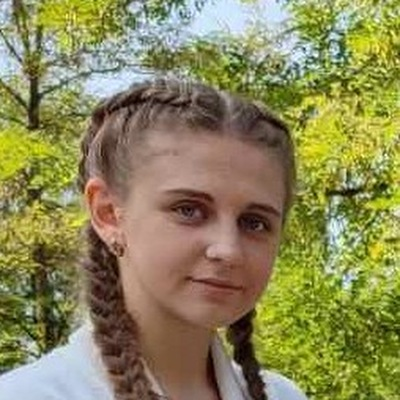
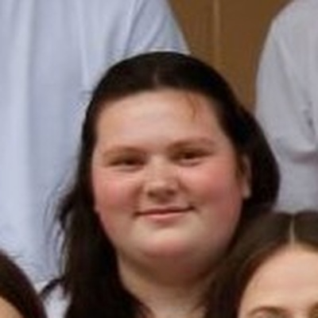

Про сайт
Цей сайт — відтворена версія початкового сайту про Йосипа Струцюка, створеного на платформі Google Sites учнями та вчителями Рожищенського ліцею №2 для конкурсу «Літературна візитка краю — 2021».
На обласному етапі конкурсу «Літературна візитка краю — 2021» проєкт команди Рожищенського ліцею №2 посів перше місце серед команд Волині.
Попередній сайт було втрачено без можливості відновлення. Нову версію відтворено на основі архівної копії головної сторінки та матеріалів, що збереглися в учасників проєкту, зі збереженням структури попереднього сайту на новій платформі. Відтворену версію зробив Олександр Мізюк.
Команда сайту



Про ліцей
Рожищенський ліцей №2 розташований у місті Рожище на Волині. Учні ліцею під керівництвом вчительки української мови та літератури Алли Новосад створили початковий сайт про свого земляка, письменника Йосипа Струцюка, як внесок у збереження культурної спадщини краю.